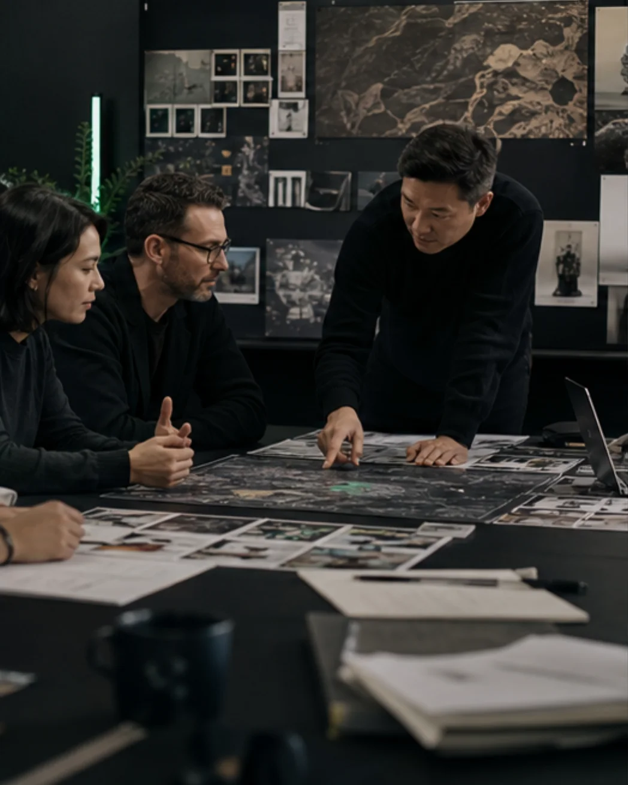
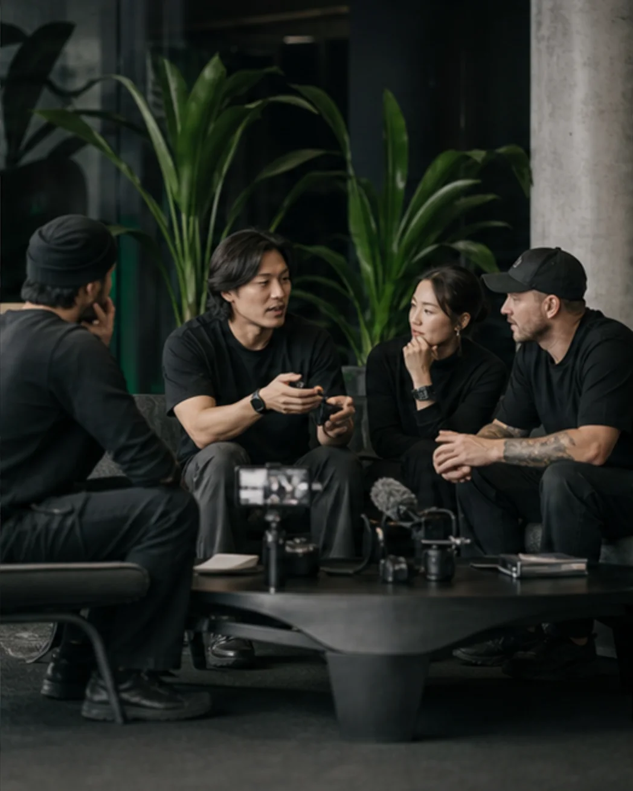
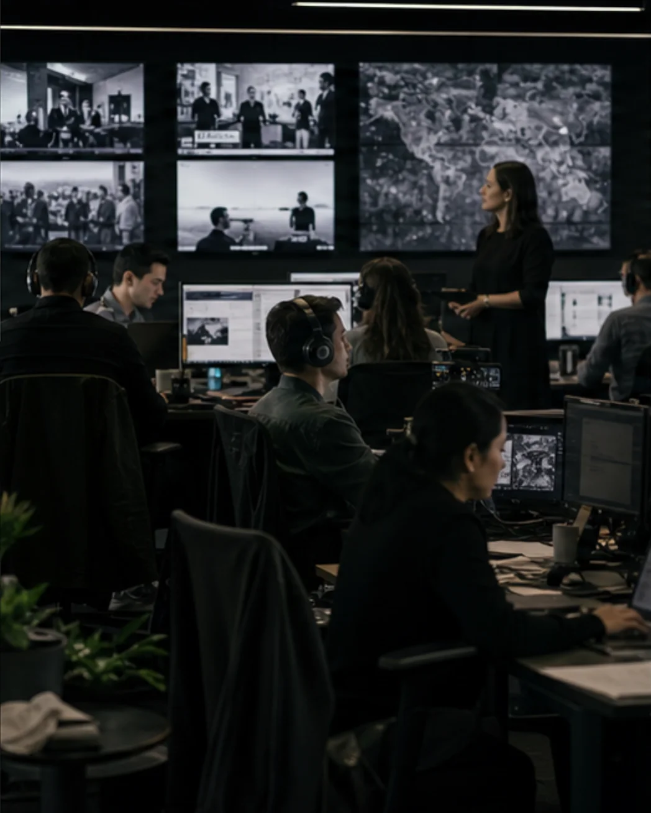
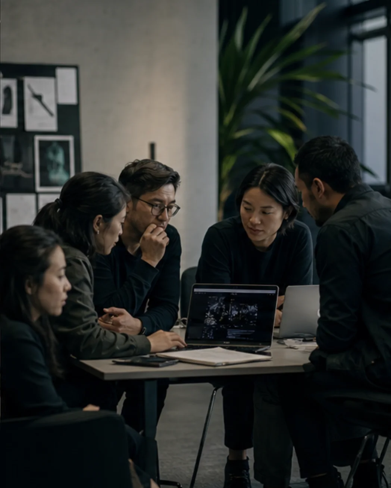

How we work
One integrated engagement connects market-entry strategy and narrative design with KOL influence, global media distribution, and post-launch growth.
Market entry
Build the market-entry strategy, positioning, and narrative that turn technical advantage into an ownable category position.

Creator network
Use our network of top creators and domain experts to place the story with the voices each market already trusts.

Media distribution
Coordinate global media campaigns across the channels and publications that shape each target market.

Feedback loop
Use live product performance and community feedback to track growth, sharpen execution, and keep momentum compounding.

One operating system, delivered across 15+ global markets. See what it has produced in the next section.
See our results